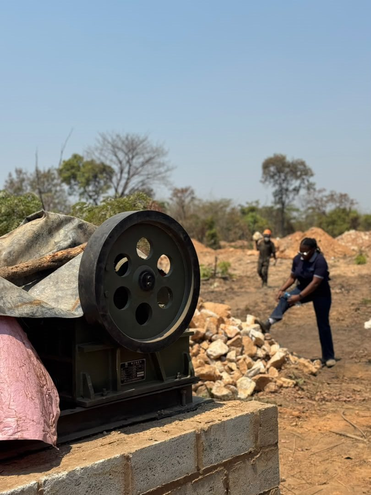

Material movement
Tipper trucks can support the movement of material around mining, construction and industrial work areas, subject to the specific project requirement.
Omni Minerals
Equipment sourcing and project support for mining and industrial operations requiring practical machinery and material-handling solutions.
Overview
Omni Minerals supports equipment sourcing and project support for operations that need practical, documented machinery solutions.
The documented equipment profile includes a 50-ton mobile crane, tipper trucks and front-end loaders. Equipment requirements, availability, ownership, specifications and commercial terms must be confirmed for each enquiry.
Equipment categories
The cards below describe equipment categories and potential operational contexts. They do not represent a confirmed owned fleet, current availability or a completed project history.
Tipper trucks can support the movement of material around mining, construction and industrial work areas, subject to the specific project requirement.
Front-end loaders can support loading, stockpile handling and site material movement where the operating context calls for them.
An excavator is shown as a representative equipment category for site support discussions; no ownership or fleet availability is implied.
The documented equipment profile includes a 50-ton mobile crane for relevant lifting and project support requirements.

Field equipment context
The supplied photograph shows equipment in a field setting and is used to illustrate the operational context. It does not identify a brand, model, ownership status, capacity or current availability.
For a useful discussion, customers can share the site context, material-handling requirement, equipment category, timing and any confirmed technical or commercial parameters.
How we support operations
Equipment support can help customers frame the type of machinery needed for site operations, material handling or project support before availability and terms are confirmed.
Why work with Omni Minerals
Equipment conversations should keep people, operations and communities in view.
Requirements, capabilities and terms should be described honestly and confirmed directly.
Clear communication supports practical next steps for an equipment requirement.
Equipment support is approached as part of a wider operational relationship.
Talk to Omni Minerals about your equipment or project support requirement.